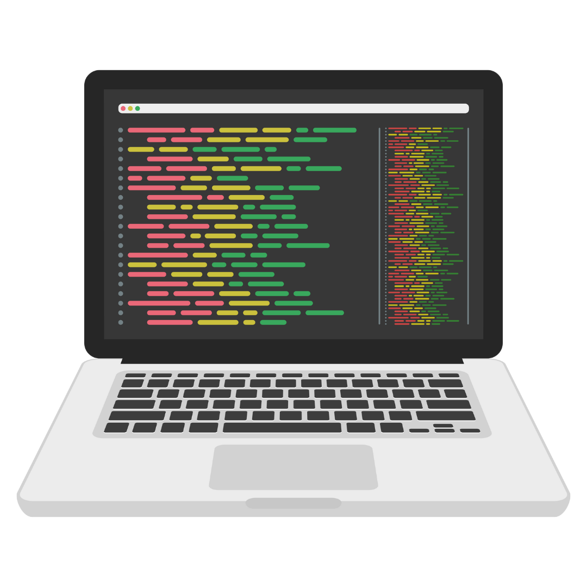

Notas de Clase
En esta sección se irán subiendo los apuntes de clases, las tareas, prácticas, videos de clase y proyectos que realizaremos a lo largo del curso. Asimismo, podrás hallar la solución de todas las tareas, prácticas y proyectos que realicemos. También, esta la opción de Quiz, la cual contiene un cuestionario referente a los temas principales vistos en la clase.
Temario
Módulo I: Introducción
- Introducción a LáTeX
- Introducción a la Programación con Python
- Bucles y Condicionales
- Librería Matplotlib e introducción a la POO
- Cadenas de texto
- Colecciones
- Funciones
- Proyecto 1: Módulo SymPy y Tkinter
- Bonus 1: Introducción a las librerías NumPy y Pandas
- Proyecto 2: Introducción al análisis de datos
- Clases extra
Módulo II: Intermedio
- Más sobre pandas: Índices, loc e iloc
- Más sobre pandas: graficación con pandas
- Más sobre pandas: Agregaciones y groupby
- Más sobre pandas: Unión interna (inner join)
- Más sobre pandas: Unión derecha, izquierda y autojoin
- POO: Clases y objetos
- POO: Encapsulamiento, getters y setters
- POO: Herencia
- POO: Módulos y paquetes
- Introducción a la librería seaborn
- Profundización en seaborn
- Clases extra
Módulo III: Introducción a SQL con Python y PostgreSQL
- Librería SQLITE3 e introducción a SQL
- Introducción a SQL con PostgreSQL
- Consultas avanzadas
Curso introductorio
Introducción a LáTeX
Clase 0: | Notas de Clase | Presentación | Script | Ejercicios | Solución ejercicios (Script) | Formulario |
Introducción a la Programación con Python
Clase 1: | Notas de Clase | Presentación | Tarea 1 | Práctica 1 | Quiz 1 |
Solución tarea 1 Práctica 1 Video de claseBucles y Condicionales
Clase 2: | Notas de Clase | Tarea 2 | Práctica 2 | Quiz 2 | Más sobre lógica |
Solución tarea 2 Práctica 2 Video de claseLibrería Matplotlib e introducción a la POO
Clase 3: | Notas de Clase | Presentación | Tarea 3 | Práctica 3 | Quiz 3 |
Solución tarea 3 Práctica 3 Video de claseCadenas de texto
Clase 4: | Notas de Clase | Tarea 4 | Práctica 4 | Quiz 4 | Archivo txt |
Solución tarea 4 Práctica 4 Video de claseColecciones
Clase 5: | Notas de Clase | Tarea 5 | Práctica 5 | Quiz 5.1 | Quiz 5.2 |
Solución tarea 5 Práctica 5 Video de claseFunciones
Clase 6: | Notas de Clase I | Notas II | Tarea 6 | Práctica 6 | Quiz 6.1 | Quiz 6.2 |
Solución tarea 6 Práctica 6 Video de claseIntroducción a las librerías NumPy y Pandas
Clase 7: | Notas de Clase I | Notas II | Tarea 7 | Solución tarea 7 | Práctica 7 | Solución práctica 7 | Quiz 7 |
Solución tarea 7 Práctica 7 Video de claseClases extra
Extras: | Números perfectos | Fibonecci | Juego de la vida | Juego de la vida (algunos patrones) |
Curso intermedio
Más sobre pandas: Índices, loc e iloc.
Clase 8: | Notas de Clase | Tarea 8 |
Video de claseRecapitulación. Graficación con Pandas
Clase 9: | Notas de Clase | Tarea 9 |
Video de claseAgregaciones y groupby
Clase 10: | Notas de Clase | Tarea 10 |
Video de claseDiagramas de Venn y unión interna
Clase 11: | Notas de Clase | Tarea 11 |
Video de claseUnión derecha, izquierda, externa y autounión
Clase 12: | Notas de Clase | Tarea 12 |
Video de claseIntroducción a la programación orientada a objetos: Clases y objetos
Clase 13.1: | Notas de Clase | Clase 13.2: | Notas de clase |Clase 13.3: | Notas de clase | Práctica POO 1 | Ejercicio POO 1 |
Video de claseEncapsulamiento. Getters y setters
Clase 14.1: | Notas de Clase | Clase 14.2: | Notas de clase | Práctica POO 2 | Ejercicio POO 2 | Clase 14.3: | Notas de Clase |
Video de claseHerencia
Clase 15.1: | Notas de Clase | Clase 15.2: | Notas de clase | Clase 15.3: | Notas de clase | Clase 15.4: | Notas de clase | Práctica POO 3 | Ejercicio POO 3 |
Video de claseMódulos y paquetes
Clase 16.1: | Notas de Clase | Clase 16.2: | Notas de clase | Clase 16.3: | Notas de Clase | Práctica POO 4 |
Video de claseIntroducción a la librería Seaborn
Clase 17.1: | Notas de Clase | Clase 17.2: | Notas de Clase | Clase 17.3: | Notas de Clase |Tarea seaborn 1 |
Video de claseProfundización en Seaborn
Clase 18.1: | Notas de Clase | Clase 18.2: | Notas de Clase | Clase 18.3: | Notas de Clase |Tarea seaborn 2 |
Video de claseClases extra
Extras: | Ejemplo de análisis de datos | Imputación de datos faltantes | Pivots |
Introducción a SQL con Python y PostgreSQL
Librería SQLITE3 e introducción a SQL
Clase 19: | Video de Clase |Notas de Clase | Tarea sql 1 |
Introducción a SQL con PostgreSQL
Clase 20: | Video de Clase |Notas de Clase en Python | Código SQL de la clase | Tarea sql 2 |
Consultas avanzadas y joins
Clase 21.1: Creando datos falsos con Python | Video de Clase |Notas de Clase |
Clase 21.2: WHERE, HAVING, BETWEEN, LIKE, IN, JOINS | Video de Clase | Archivo SQL |
Proximamente:
- Más sobre SQL
- Expresiones regulares en Python
- Problemas de algoritmos
Clases
En esta sección subiremos las grabaciones y materiales de clase, así como apuntes adicionales y complementes.
El siguiente es el formulario de entrega (tareas, ejercicios y proyectos):
Materiales de clase
C1: Introducción a la programación con Python
Grabación clase 1 Notas de clase Link Github Clase extra (30 minutos)
C2: Bucles, condicionales y colecciones
Grabación clase 2 Notas de clase Quiz 1 Tarea 1 Práctica 1 Clase extra
Notebook del video extra
C3: NumPy I y Pandas I
Grabación clase 3 Notas de clase I Notas de clase II Tarea 2 (NumPy) Práctica 2 (Pandas)
Clase extra Notebook del video extra
Proyecto 1: Librerías SymPy y Tkinter
Proyecto 1: | Teoría I | Teoría II | Instrucciones | Solución del Proyecto 1 | Solución P1 (Script) | Quiz P1|
Proyecto 2: Introducción al análisis de datos
Proyecto 2: | Proyecto resuelto | Archivo: Encuestas.csv | Archivo: Asistencias.csv | Quiz P2 |
Proyecto 3: Programación orientada a objetos
Parte 1: | Notas de Clase | Parte 2 | Notas de clase | Parte 3 | Notas de Clase | Parte 4 |Notas de Clase|
Proyecto 4: Diseño e implementación de una base de datos
Proyecto 4| Descripción |